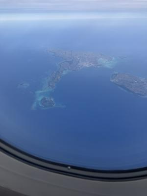
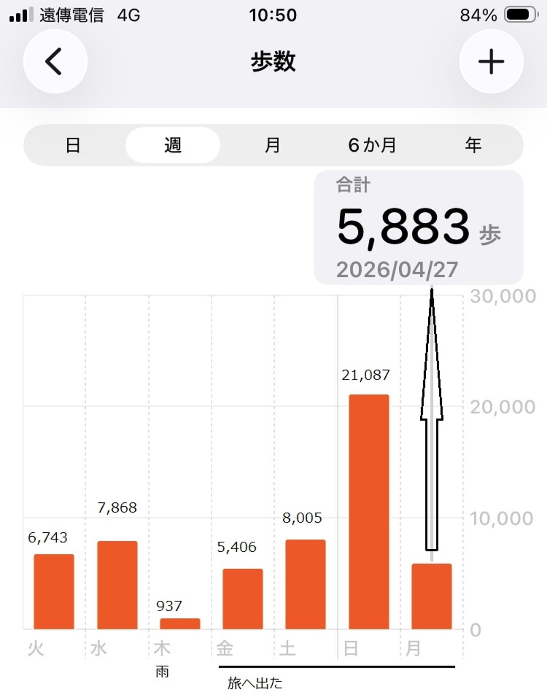

うるがいの話 ある日
最新: ハイヤー【うるがいの話 ある日】とは 一日だけのプログです
『うるがいの話』の最新一日だけのプログで、通信料が少なく経済的だ。カニの画像をクリックすると全ての日付が載る『うるがいの話』サイトを表示します
|
|
【うるがいの話】 うるがい(ｳﾙｶﾞｲ urugai)とは、『もずくがに』の名前でとても大きくなります。 |
|---|---|
|
|
【カミマヤーの話】 猫のことを方言でマヤーといいます。カミマヤー（kamimayaa）とは、神の猫のことです。 |
|
【たながぁの音楽】 たながぁ（ﾀﾅｶﾞｰ tanagaa）とは手長えびのことで、何種類かあり大きいのは車 エビぐらいになります。 |

|
【ぶながぁの話】 ぶながぁ(ﾌﾞﾅｶﾞｰ bunagaa)とは、赤い髪の毛、赤い身体、そして身長は１ｍ２０ｃｍ ぐらい、川の蟹を食べているの目撃された。場所は沖縄県国頭郡大宜味村のと ある村僕の隣近所に住んでいる爺さんから、聞いた話です。 |
|
|
【ギーマの話】 ギーマ(giima)とは、山原の里山に咲くスズランに似た、 花を付けます。実は食べられます、 気が付くと口の周りが紫になっています。 |
2026年04月28日 (火）ハイヤー
16:19
空港からの帰りのタクシー料金は、５，０４０円でした。高いッ
ス、行の、２，６００円と比べると。タクシー乗り場に着いたら
以外と混んでいなかった。アレと思い、乗り場にいる案内のおじ
さんに、タクシーについて尋ねたかったが、二人でお喋りをして
なかなか、声をかけられなかった。仕方なく、乗った。３ナンバ
ーの高級車でした。乗車して料金が高いのに気が付きましたが、
後の祭りです。あーあー、・・・・・。ヨメが、お金を支払って
領収書をもらい、確認するとハイヤーであることが判明。
下は、飛行機から眺めた宮古島です。

旅行中、かなり歩きました。スマホの万歩計をみると、いつもの
ジョギングと遜色ありません。２６日には、２１，０８７も歩い
ています。そのせいか、疲れて昨日は、夜９時半に横になりまし
た。

あ、台湾の空港からホテルまでは、子供が準備してくれたベンツ
のクルマでした。乗り心地、最高でしたね、そして、いろいろド
ライブに行った子供の友達の車も、マツダの高級車でした。車酔
いのためのトラベルミンも、使いませんでした。